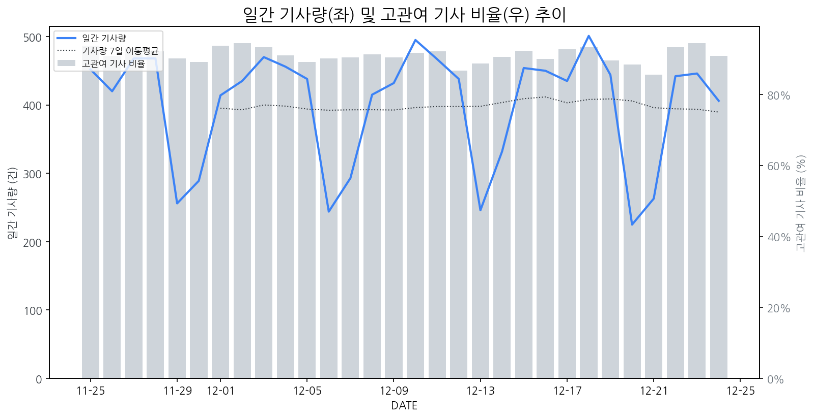

1
시장 활동 지표
기사량 추세 & 이상 징후 탐지
시장의 '전체 기사량'이 평소보다 비정상적으로 급증했는지(Spike)를 차트로 확인하고, LLM이 분석한 급등의 핵심 원인을 파악할 수 있음

고관여 기사란? 산업 연관 키워드로 수집된 기사들 중 디스플레이 키워드에 가중치를 반영하여 도출된 관련성 높은 기사
수집된 기사 수 (2025-12-24)
406
-7% WoW
기사량 변동 수준 (7일 이동평균 대비)
±6.7% 이하
2
오늘의 키워드
급격한 관심 ↑, 주목해야 할 키워드
1
모니터
+7.3σ
삼성전자의 세계 최초 6K 게이밍 모니터 공개 소식에 '모니터' 키워드가 급증했습니다.
Related Metrics
금일 언급량: 34, 전일 대비: +29
Interpretation
프리미엄 모니터 시장 경쟁 심화
Next Step
'모니터' 관련 상세 기사 및 경쟁사 반응 모니터링
2
삼성전자
+3.7σ
삼성전자가 CES 2026에서 세계 최초 6K 게이밍 모니터를 공개하며 기술 리더십을 재확인했습니다.
Related Metrics
금일 언급량: 37, 전일 대비: +6
Interpretation
프리미엄 디스플레이 시장 주도권 강화
Next Step
핵심 토픽 'Foldable_Display_Topic' 관련 신호입니다. 3번 섹션(키워드 감성분석)에서 해당 토픽의 감성 변동을 교차 확인하세요.
3
xr
+1.7σ
XR 콘텐츠 제작 분야에서 세종대와 미드키스의 산학협력이 XR 생태계 확장 기대감을 높였습니다.
Related Metrics
금일 언급량: 7, 전일 대비: +5
Interpretation
XR 디스플레이 수요 증가 전망
Next Step
'xr' 관련 상세 기사 및 경쟁사 반응 모니터링
4
벤큐
+1.6σ
벤큐 조위가 e스포츠팀 농심 레드포스와 공식 후원을 체결하며 브랜드 인지도를 높였습니다.
Related Metrics
금일 언급량: 4, 전일 대비: +3
Interpretation
e스포츠 마케팅 강화
Next Step
'벤큐' 관련 상세 기사 및 경쟁사 반응 모니터링
3
실시간 Risk 키워드
경계해야 할 시그널 탐지
특정 토픽의 부정 감성 점수가 급등할 때 이를 즉시 탐지하고, "근거 기사" 링크를 통해 리스크의 실체를 빠르게 파악할 수 있음
키워드 분석 결과, 오늘은 걱정할 만한 하락 신호가 없습니다. (부정 언급량 변화: +1.5σ 이내)
4
주요 이벤트 모니터링
실시간 산업 동향 파악을 위한 주요 활동
최근 발생한 주요 기업들의 신제품 출시, 투자 등 주요 이벤트를 제공하여 매일 경쟁사 동향을 확인할 수 있음
카카오가 기존의 폴더블 디스플레이를 넘어선 트라이폴드(세 번 접는) 디스플레이와 같은 새로운 폼팩터 기술에 대한 투자를 확대하고 있습니다. 이는 '생활 AI 테크'라는 큰 그림 아래 디스플레이 기술의 혁신을 추진하려는 움직임입니다.
Impact
새로운 폼팩터 디스플레이의 등장은 고도화된 기술 경쟁을 촉발하며, 관련 소재, 부품, 제조 공정 전반에 걸쳐 새로운 시장 기회를 창출하거나 기존 시장 판도를 변화시킬 수 있습니다.
Next Step
디스플레이 제조 기업은 트라이폴드와 같은 다중 접힘 디스플레이 구현을 위한 핵심 기술 개발 및 양산 역량 확보에 주력해야 합니다.
LG그룹 구광모 회장이 7년간 지속해 온 전장 사업에 대한 과감한 투자가 성과를 내고 있으며, 이는 LG가 전장 시장에서 본격적인 승부수를 띄웠음을 의미합니다.
Impact
LG의 전장 사업 성공은 관련 디스플레이 기술 개발 및 공급망 강화에 대한 투자 확대로 이어져, 차량용 디스플레이 시장의 경쟁 구도 변화 및 기술 혁신을 촉진할 수 있습니다.
Next Step
디스플레이 제조 기업은 LG의 전장 사업 성과를 기회로 삼아, 차량용 디스플레이 기술 개발 경쟁력을 강화하고 LG 등 주요 전장 부품 업체와의 전략적 파트너십 구축을 모색해야 합니다.
삼성전자가 업계 최초로 6K 해상도를 지원하는 게이밍 모니터 '오디세이'를 공개하며 하이엔드 게이밍 시장에 새로운 기준을 제시했습니다. 이는 기존 4K를 뛰어넘는 초고해상도 게이밍 경험을 제공하여 사용자들의 몰입도를 극대화할 것으로 기대됩니다.
Impact
삼성전자의 6K 게이밍 모니터 출시는 고해상도, 고주사율, 고화질 패널 경쟁을 심화시키고, 관련 부품 및 기술 개발 수요를 촉진할 것입니다.
Next Step
경쟁사들은 6K 이상의 해상도, 차세대 패널 기술, 또는 차별화된 게이밍 특화 기능을 개발하여 시장 경쟁력을 확보해야 합니다.
삼성디스플레이가 8.6세대 IT OLED 생산 라인 투자 계획을 발표하며 차세대 디스플레이 시장 선점을 위한 행보를 보이고 있습니다. 이는 IT 기기용 OLED 시장에서의 경쟁 우위를 강화하려는 전략으로 해석됩니다.
Impact
이번 투자는 IT 기기용 OLED 패널 시장의 판도를 바꾸고, 관련 소재 및 부품 공급망에 큰 영향을 미칠 것으로 예상됩니다.
Next Step
경쟁사들은 삼성디스플레이의 기술 및 생산 능력 강화에 대비하여 차세대 IT OLED 기술 개발 및 투자 계획을 조속히 수립해야 합니다.
수소차 관련주에서 SJG세종, 국일제지, 현대차 등이 상승세를 보이며 시장의 주목을 받고 있습니다. 반면, 일부 종목은 하락세를 기록하며 시장 분위기가 엇갈리고 있습니다.
Impact
수소차 시장의 성장 기대감이 디스플레이 업계의 차량용 디스플레이 수요 및 기술 개발 동향에 긍정적인 영향을 미칠 수 있습니다.
Next Step
디스플레이 제조 기업은 차량용 디스플레이 시장에서의 경쟁력 강화를 위해 수소차 적용 가능성이 높은 차세대 디스플레이 기술 개발에 집중해야 합니다.
5
지금 주목해야 할 뉴스 TOP 3
올 한해 최고의 IT 제품은?…'2025 씨넷코리아 에디터스 초이스' 공개
IT리뷰 전문매체 씨넷코리아가 올 한해 최고의 IT 제품을 선정하는 ‘2025 씨넷코리아 에디터스 초이스(2025 CNET Korea Editors Choice)’를 24일 공개했다.
[Who Is ?] 유지범 성균관대학교 총장
로컬 요약 모델 실행 중 오류 발생: 제목을 클릭하여 기사 전문을 확인할 수 있습니다.
삼성·LG, CES 2026서 디스플레이 '기술 초격차' 증명한다
내달 6일(현지시간) 미국 라스베이거스에서 개막하는 세계 최대 IT·가전 전시회 'CES 2026에서 삼성과 LG가 '마이크로 RGB', AI, 전장 등 디스플레이 기술력 격차를 글로벌 시장에 선보일 전망이다.